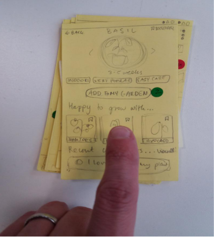

UX and service design, supporting gardening and permaculture
This is the group project carried out for my User Experience and Service Design module, at Edinburgh Napier University in the spring of 2019.
The task was to develop a service to encourage service users to engage with gardening and permaculture. The service would be designed to educate and engage, and to connect users with a shared love of plants
We started by conducting research in order to establish who would be interested in using a permaculture service, and what they would want it to do. This alowed us to create user personas, a service blueprint and a user flow.
From this, we could start putting together sketches and low-fidelity prototypes of the service.
This prototype development work gave us materials to test with users before putting in the detailed work on setting up a high-fidelity prototype.
Our high-fidelity prototype was developed in Axure RP was tested in two iterations - one for functionality, and one for functionality plus addition of the colour palette.
The design process was evaluative throughout, to avoid running the work into a cul-de-sac. Every iteration was developed on the basis of pre-existing user feedback. Each team member developed their own prototype iterations, before the iterations were combined into a master iteration. This taught us about the importance of centring the user within service design, and to avoid creating something that either wouldn't be used or would be unpleasant to use.